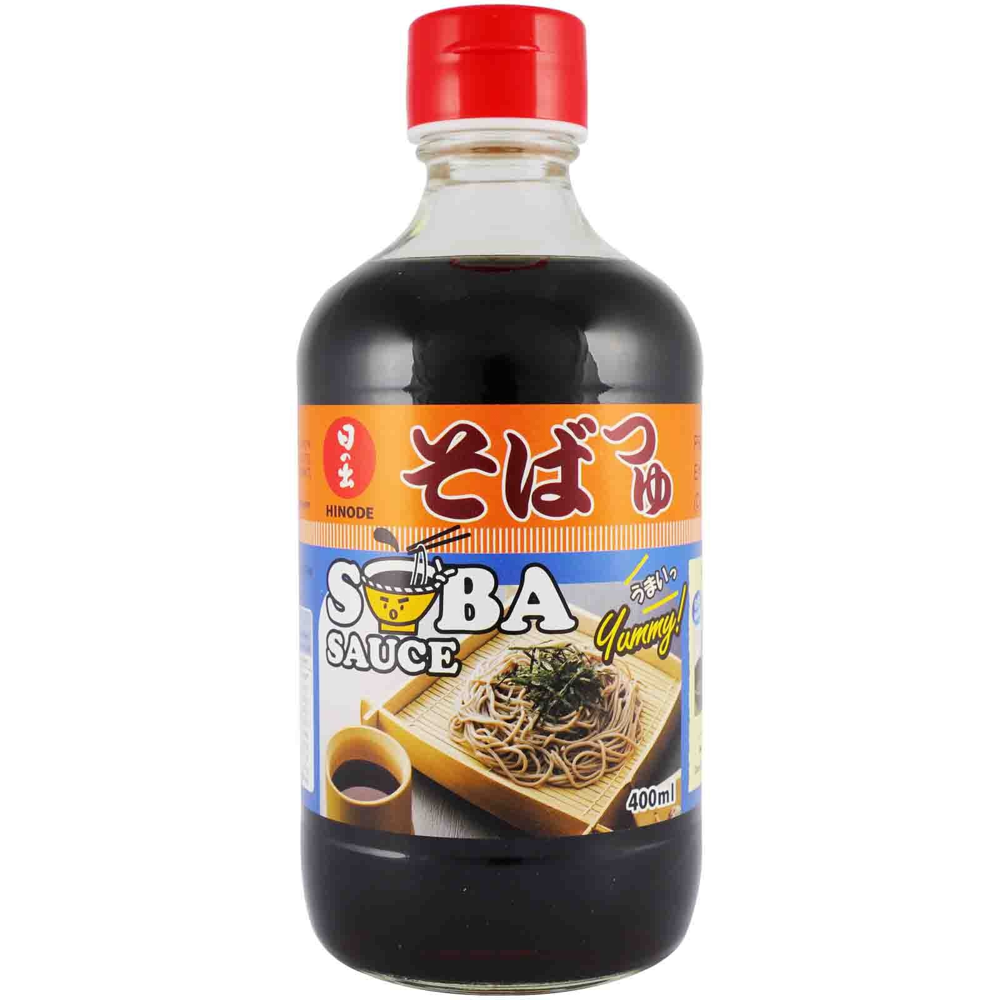

where to get ingredients
market basket (primarily 'world foods aisle')
- korean sweet potato noodles
- wakame seaweed
- mirin

- firm tofu

- silken tofu
- five spice powder

- enokis

- chinese obes
- rice noodles

- miso

- sesame oil

- soba noodles

- fish sauce

- wheat noodles

- pak choi

- gochujang
- tom yum paste

- salt cod

- fermented tofu

- assorted starches

- soba sauce
- star anise
- banana leaves
- msg
 aji amarillo pastereliable mart (get a soft drink while u there)
aji amarillo pastereliable mart (get a soft drink while u there)- aburaage fried tofu (in the freezer)
- clam dashi
- bonito dashi

- katsuobushi (bonito flakes)
- glutinous rice
- red bean paste
- nori
- soon tofu
- umeboshi

- furikake

- korean hot pepper powder (gochugaru)

little india grocery store (next to market basket)- spring roll wrappers
- curry leaves
- mango pickle
chinese supermarket (HMart has most of these but is more expensive and less nice. chat to the fish guys if you want a good time, and if you're there early, get a bao from the shop across the road.)- more fried tofu
- Pearl River Bridge superior light soy sauce (if you can't find, kimlan and lee kum kee are also good)

- Pearl River Bridge superior dark soy sauce

- chinkiang vinegar (chinese black rice vinegar)

- Laoganma chilli oil

- Shaoxing wine

- dumpling wrappers

- soup rounds (tang yuan)
- more exciting spinach varieties (try the 'chinese water spinach' it is so nice)

- thousand year egg
- hot fermented bean paste (doubanjiang)

- you tiao (long breakfast donut)
- pickled mustard root